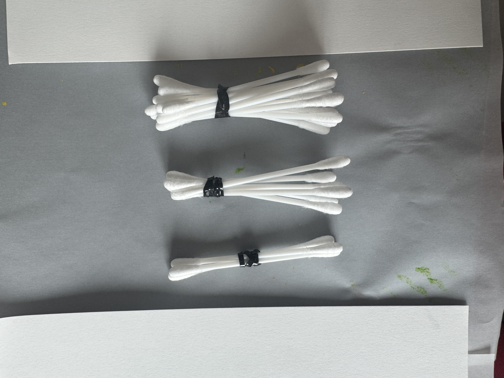
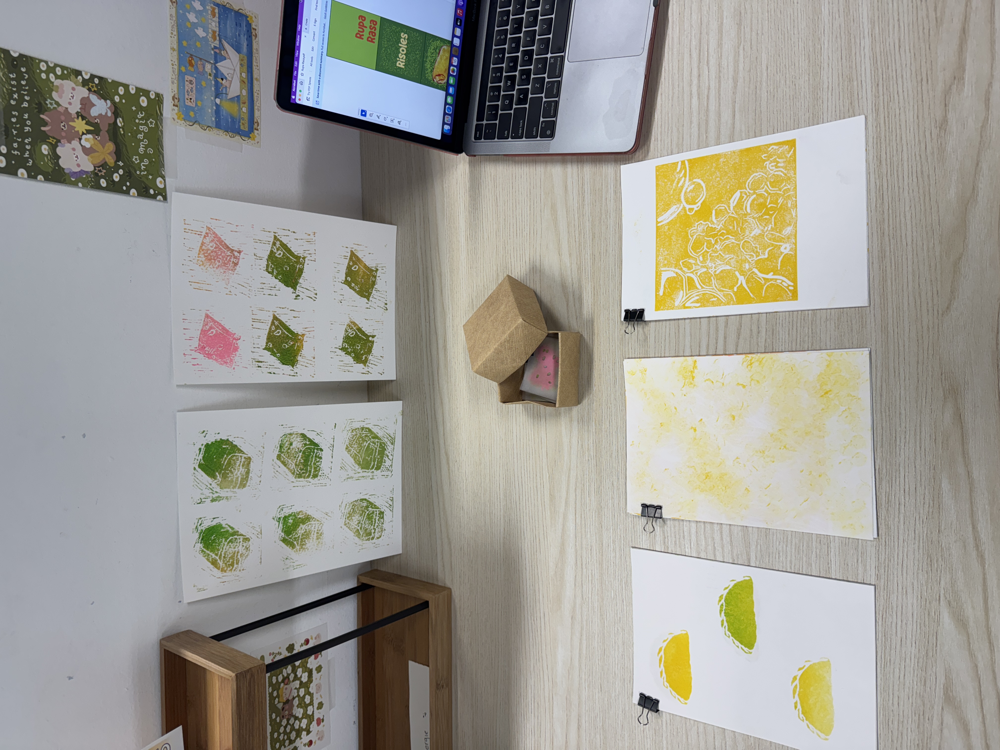

Print Explorations


This week, I decided to explore more of the print mediums. For the first few prints, I used cotton buds to depict oil. I tied three different amounts of cotton buds; I started with three, then six, then twelve. For the first print, I wanted to depict splattered oil, so I decided to stamp the cotton bud everywhere on the paper. I made sure some areas were faded to draw more attention to the bigger splatters.


The one on the left is the second print and is more structured than the first print. I feel like this print is more crowded than the first one because everything is compacted together, so it feels tight. On the right is the third print; I wanted to experiment with one side and the cotton bud's opacity. This was an experimental approach because at this stage I was exploring.
I also did some sketches for the rice grains, close-up leaves, and a bit of the bamboo piece. I took the rice grain and made a linocut print on paper; I also experimented with the type of paper I used to see how the design contrasted with it. I did two linotypes: one is the outline of the grain itself, and the other is the grain's negative space. I chose red at the time because I wanted to see what it would look like if I picked a bold, striking color rather than something subtle.
Reflection

These past few weeks, I also had a pin-up session. I shared a collection of my outcomes with my class. I brought a couple of things that I have explored within the last few weeks. Most of them are my lino print outcomes where I explored the different food textures and stencil work. Since this was a pin-up session, I received a lot of feedback from my peers and lecturer, and I hope to do more exploration of my work.